Watch your Plex library on a 2014 Samsung Smart TV again
Neolume is a free, open-source client for Plex Media Server made for Samsung Smart TVs with the 2014 Orsay Smart Hub (H and HU series). It fixes the sign-in that the old Plex app lost, starts in a fraction of a second and plays what the TV cannot decode by letting your server convert it.
Unofficial · Not affiliated with Plex, Inc. or Samsung · MIT licensed · No Plex Pass needed
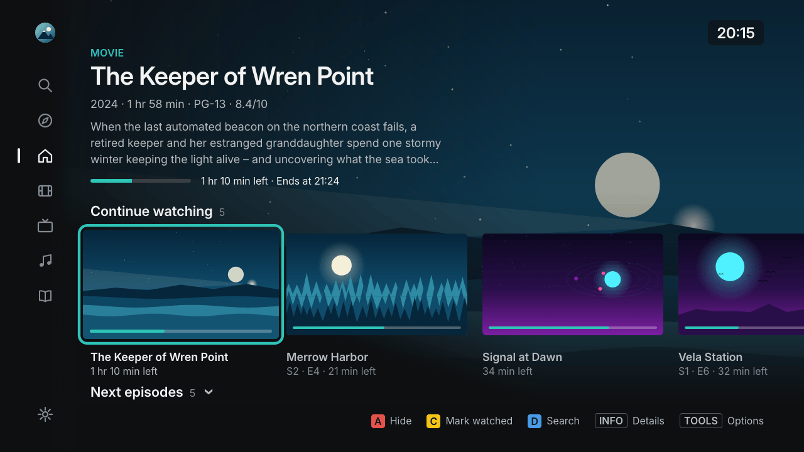
Why your old Samsung TV stopped working with Plex
Samsung TVs from 2014 only speak old encryption (TLS 1.1 and older). plex.tv no longer accepts it, so the TV's original Plex app can no longer sign in – and it is no longer maintained. Neolume moves the sign-in to your computer: a small setup program signs in to Plex once, prepares access for your profiles and installs the app on the TV through Samsung's own developer sync. From then on the TV talks only to your own Plex Media Server on your home network.
Features
Fast and made for the remote
Starts from its own cache in a fraction of a second. Smooth on the TV's hardware, with the normal remote or the Smart Control pointer.
Home, libraries, search
Continue Watching, Up Next, Recently Added, a season strip, a library grid with sort, filters and A–Z, detail pages and search.
A player that just works
Direct Play up to 1080p; HEVC, 10-bit and 4K are converted by your server. Audio and subtitles per show, skip intro and credits, autoplay next episode.
Profiles for the family
Plex Home profiles with avatars, kids profiles with reduced settings and an optional app PIN per profile.
Music and audiobooks
Browse artists and albums and listen on the big screen.
Private by design
No ads, no tracking, no telemetry. In daily use the TV talks only to your server – no cloud in between.
Screenshots
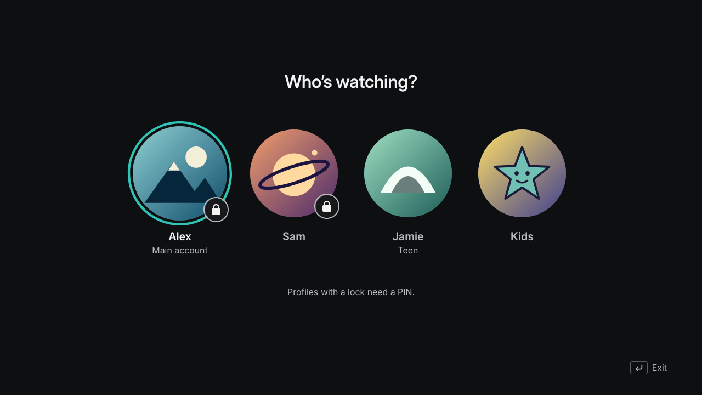
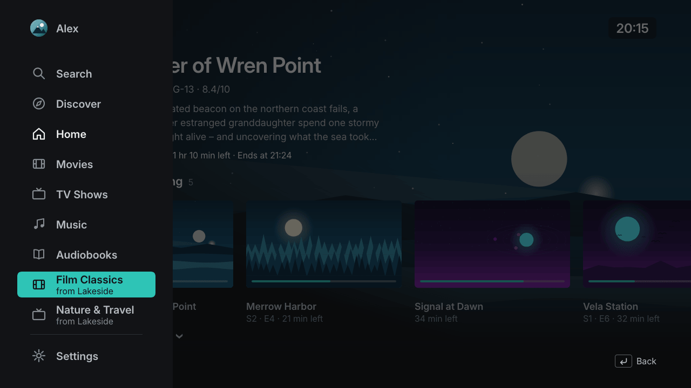
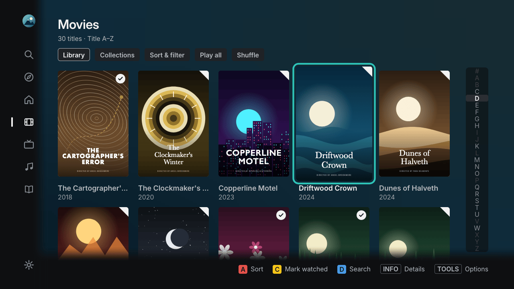
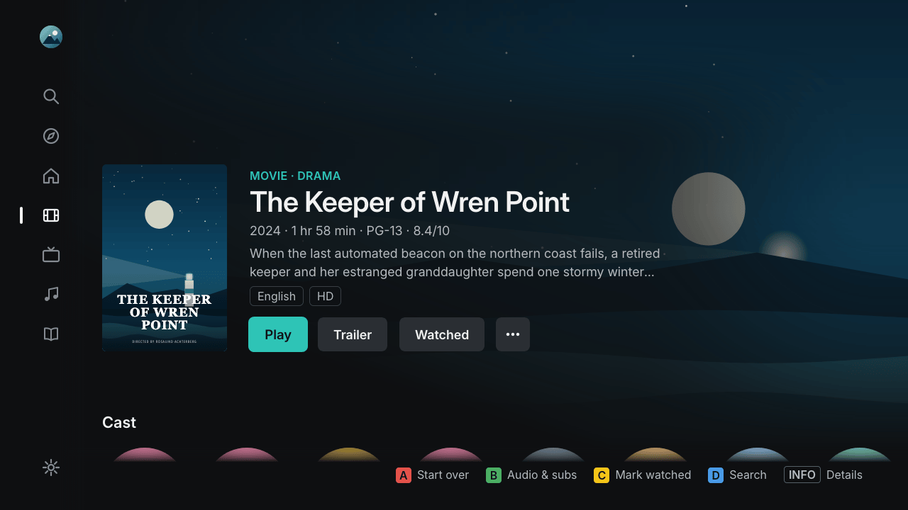
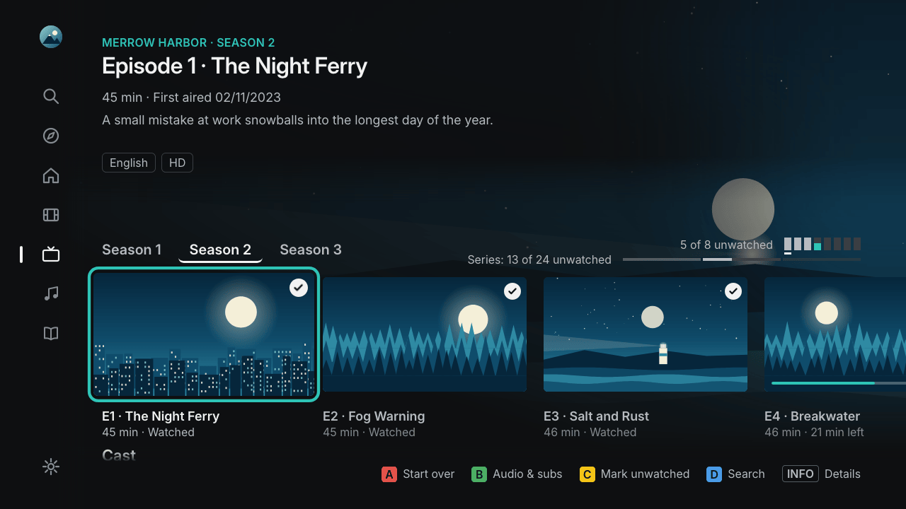
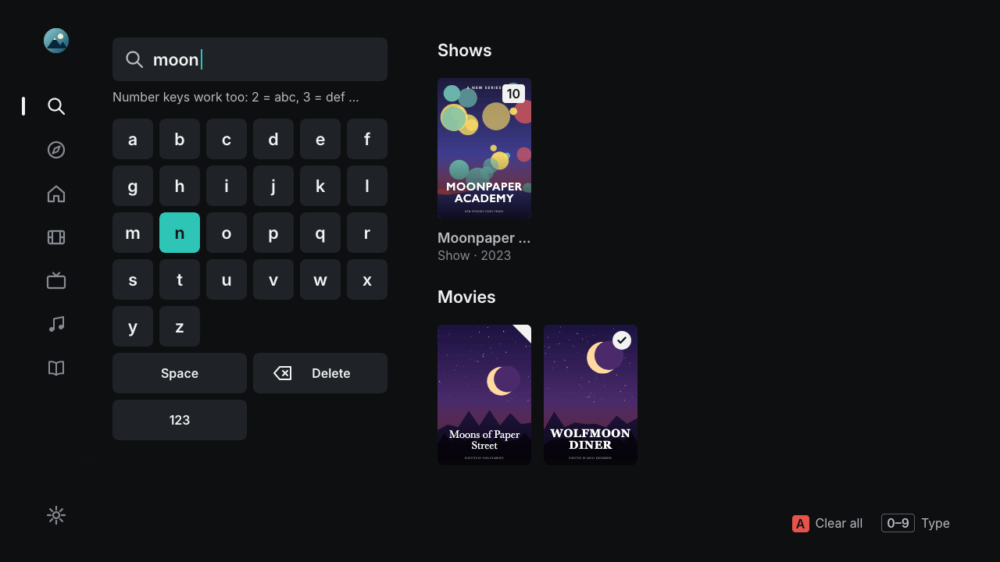
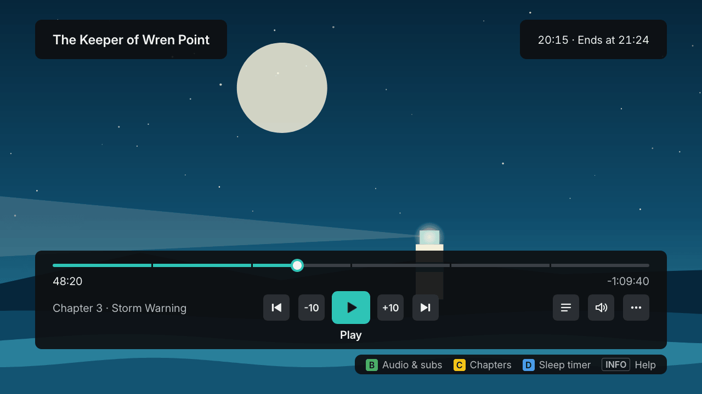
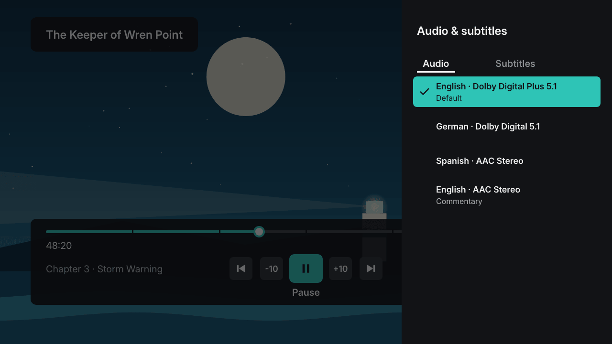
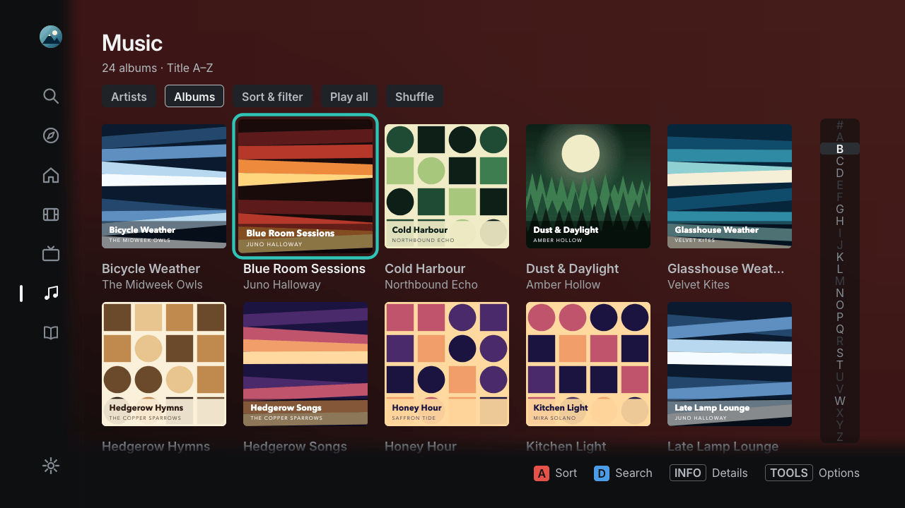
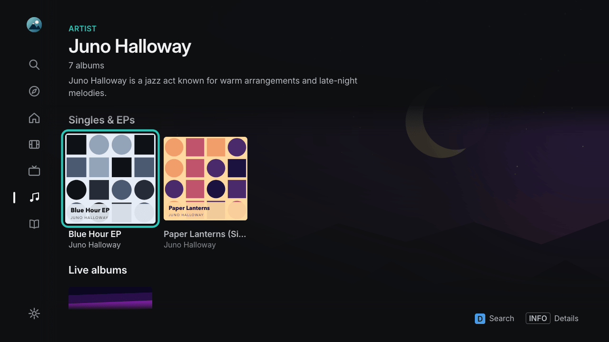
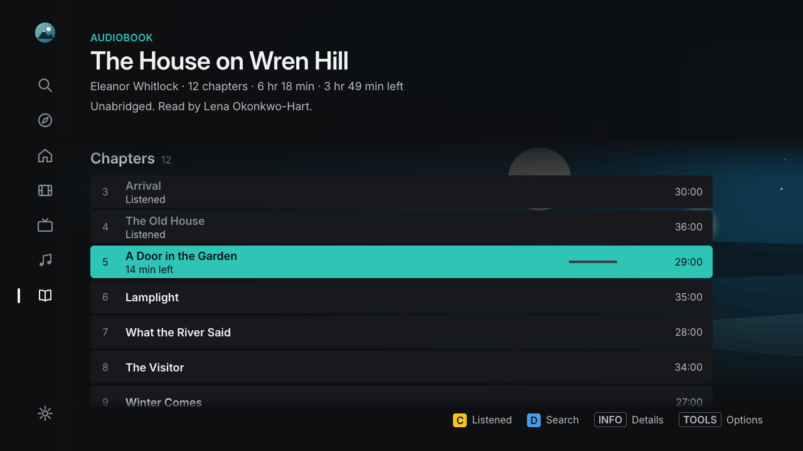
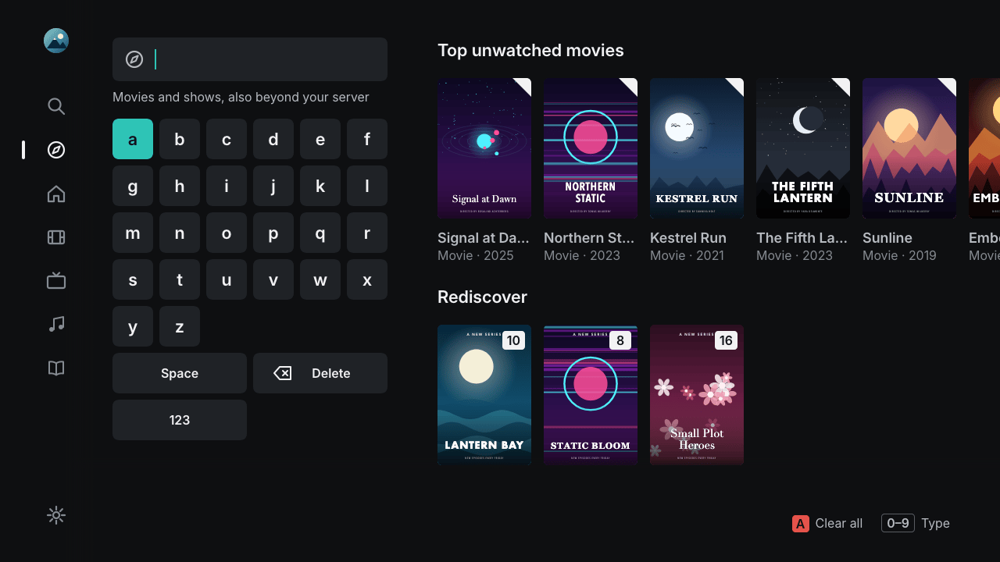
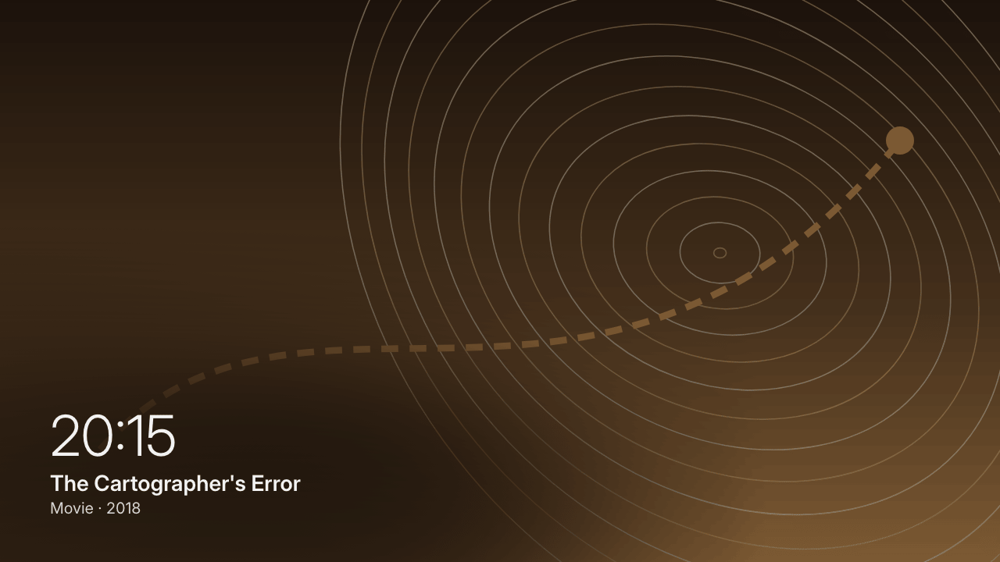
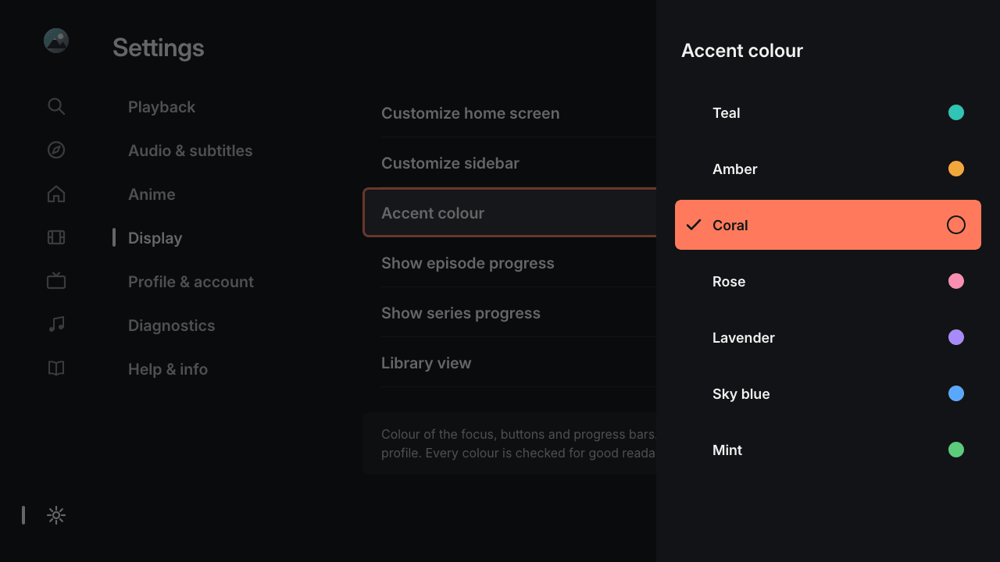
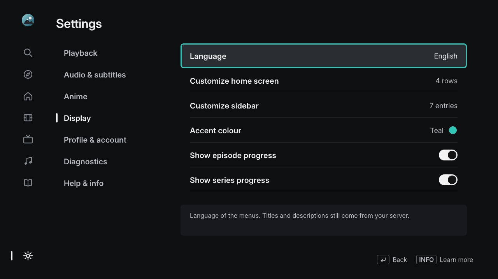
All titles, people and artwork in the screenshots are invented demo content.
Which Samsung TVs are supported?
Neolume runs on Samsung's Orsay Smart TV platform. The model year is the fifth character of the model number: E = 2012, F = 2013, H/HU = 2014, J = 2015.
| TV | Status |
|---|---|
| 2014 H series (e.g. UE48H8000, UE40H6400) | Supported – developed and tested on a UE48H8000 |
| 2014 HU series, 4K (e.g. UE55HU7500) | Should work (same platform), not tested yet |
| 2013 F series, 2012 E series | Untested – older software and a different install menu |
| 2015 J series with Orsay (some J4xxx/J5xxx) | Untested |
| Tizen TVs (most 2015 models, all 2016 and later) | Not supported – use the official Plex app from the Samsung store |
The interface is drawn at 1280 × 720 and scaled by the TV, so it looks the same on 720p, 1080p and 4K panels. Video plays at up to 1080p.
How to install
- On the TV: sign in to Smart Hub once with the user
develop(MENU→ Smart Hub → Samsung Account → Log In – no password needed). - On your computer: download the setup program from the latest release and start it – Windows (
neolume-setup-windows-x64.exe), macOS (neolume-setup-macos-arm64.zipor-macos-x64.zip), Linux (neolume-setup-linux-x64) or any system with Python (neolume-setup.pyz). - In the browser: sign in with Plex, pick your server and profiles, click Create app package.
- On the TV: in SAMSUNG APPS hold
OKfor 5 seconds on any app → IP Setting → your computer's address → Start User App Sync. - Done: Neolume appears under MY APPS. Your computer is no longer needed.
- Optional: for your Plex watchlist, the Discover rows from plex.tv and details of titles that are not on your server, tick the helper in the setup program and let it run on a computer or NAS in your home network.
Every button and menu – with drawings of the TV screens – plus troubleshooting is in the installation guide for beginners (auf Deutsch).
Build it for your TV with an AI agent
Neolume runs only on 2014 Samsung TVs. Have a newer TV? Most of them (Samsung Tizen, LG webOS, Android TV / Google TV …) have the official Plex app in their store – try that first. If you would like Neolume's look and features there, an AI coding agent can build the app for your TV from Neolume's product specification. Paste this prompt into your agent and replace the part in angle brackets:
Read https://raw.githubusercontent.com/itsab1989/neolume/main/docs/PORTING-WITH-AI.md and follow it exactly to build the app for my TV: <brand and model, e.g. "LG OLED C1">. Work in a new folder; ask me only for things you cannot do yourself.Community ports (links only – each port is the responsibility of its author, see the policy):
| Port | TV | OS | Spec version | Maintainer |
|---|---|---|---|---|
| Neolume (reference implementation) | Samsung – 2014 H/HU series with Smart Hub (Orsay), tested on UE48H8000 | Orsay Smart Hub (2014) | 1.0.5 | @itsab1989 |
Frequently asked questions
Is Neolume an official Plex app?
No. Neolume is an independent open-source project and is not affiliated with, endorsed or supported by Plex, Inc. "Plex" is a trademark of Plex, Inc.
Do I need Plex Pass?
No. Only extras like skip-intro markers and seek thumbnails depend on data your server creates with Plex Pass.
Will it delete my other apps?
Apps from the Samsung store are not touched. The TV's developer sync removes other self-installed apps that are not on the sync list – the setup program lets you add them so they stay.
Does it work outside my home?
No, by design. Neolume only connects to your server on your home network.
Is there a Neolume for newer TVs (Tizen, webOS, Android TV)?
No ready-made one. Neolume runs only on 2014 Samsung TVs with the Orsay Smart Hub; most newer TVs have the official Plex app in their app store. If you want Neolume's look and features on a newer TV, an AI coding agent can build it for you from Neolume's specification – see Build it for your TV with an AI agent.
Is my data safe?
There is no telemetry or tracking. Your Plex password is only entered on plex.tv. Each profile gets access that only works with your server and can be revoked on plex.tv at any time.
Neolume is free and always will be. If it brings your old TV back to life, a coffee is a kind way to say thanks – completely optional.